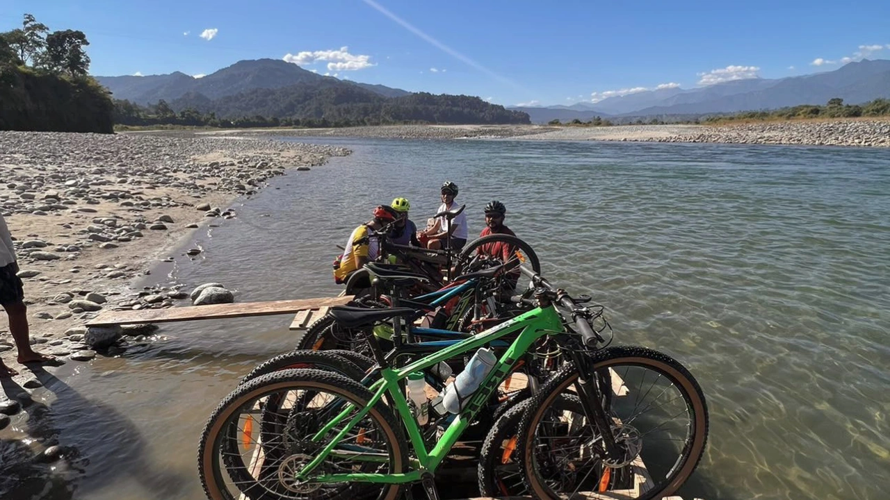

Departures 2026
Cycling · Fixed Departure
Watershed of the Brahmaputra
Cycling in Eastern Arunachal Pradesh
17 - 23 Oct 2026 · 7 days
Overview
Cycle into the headwaters and forested valleys of India's far east
This fixed departure explores eastern Arunachal Pradesh, where the Brahmaputra system gathers strength from rivers, forests and mountain valleys.
The ride links Assam's tea country with remote Arunachal landscapes, small towns, tribal villages and long quiet roads.
It is built for riders who want a set-date cycling journey through one of the least travelled corners of Northeast India.
Ride Details
Route character
Journey Flow
The tour in sections
This is an indicative flow. The final route is shaped around your dates, pace, group profile and local conditions.
Dibrugarh and tea country
Arrive in Upper Assam and ease into the landscape of tea estates and river plains.
Into eastern Arunachal
Begin riding into Arunachal through forested foothills and culturally distinct settlements.
River valleys and hill roads
Follow quiet roads shaped by the Brahmaputra's tributaries and the Eastern Himalayas.
Remote communities
Spend time around villages and small towns that reveal the far eastern edge of India.
Return to Dibrugarh
Close the loop or route with a return toward Assam for departure.
Detailed itinerary
Ask for the full route plan and cost
The itineraries are unique, so the detailed route and cost are shared directly.
Photo Gallery
Moments from the Watershed
Enquire
Plan Watershed of the Brahmaputra 2026
Share a few details and we will get back to you with availability, route notes and booking details.